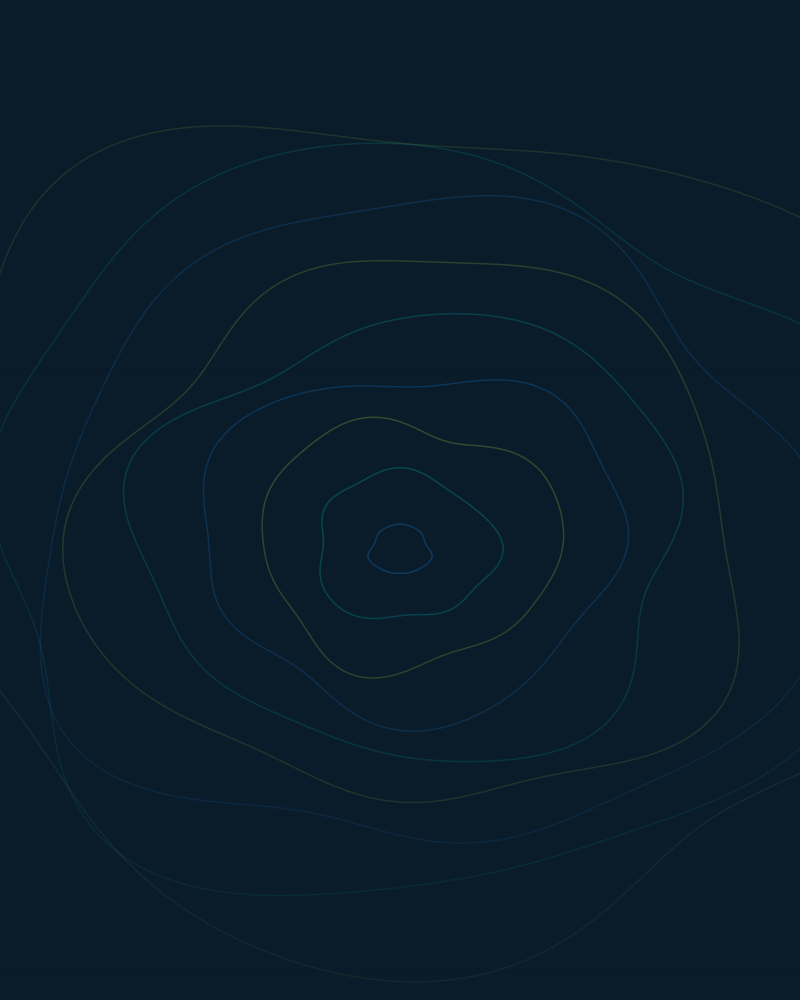

Misión · Propósito
Por confirmar
El texto oficial de la misión se incorporará aquí cuando la Fundación lo apruebe.
Tunja · Boyacá · Colombia
Ciencia que conecta. Conciencia que transforma.
«La ciencia nos conecta, la conciencia nos transforma.»
01 — Nosotros
La Fundación Red Con Ciencia tiene su sede en Tunja, Boyacá, Colombia. Su lema — La ciencia nos conecta, la conciencia nos transforma — orienta la identidad del proyecto institucional y da nombre a este sitio.
Esta página se construye junto a la Fundación: la misión, la visión, los programas y los proyectos oficiales se incorporarán a medida que sean aprobados por la organización. Lo que hoy aparece marcado como pendiente no es un vacío, es un espacio reservado para su contenido real.
Estado del contenido: datos confirmados = nombre, lema, ubicación y contacto. Todo lo demás permanece a la espera de aprobación.
Misión · Propósito
El texto oficial de la misión se incorporará aquí cuando la Fundación lo apruebe.
Visión · Horizonte
El texto oficial de la visión se incorporará aquí cuando la Fundación lo apruebe.

02 — Ejes
La estructura de ejes es la propuesta editorial del sitio; su definición oficial queda pendiente de aprobación por la Fundación.
03 — Territorio
Presencia confirmada: Tunja, capital de Boyacá. Los municipios y sedes adicionales se marcarán en el mapa solo cuando la Fundación los confirme.
Ubicación — Tunja, Boyacá
Dirección física de la sede: por confirmar. El mapa se actualizará con la ubicación exacta.
04 — Programas
Cada programa o proyecto vivirá aquí con su ficha, galería y contacto. Los títulos son provisionales: nada se publica como oficial sin aprobación de la Fundación.
05 — Centro de conocimiento
Investigaciones, publicaciones, informes y material educativo del proyecto institucional.
06 — Galería
Composiciones propias del sitio. El registro fotográfico oficial se incorporará con autorización de la Fundación.
07 — Contacto